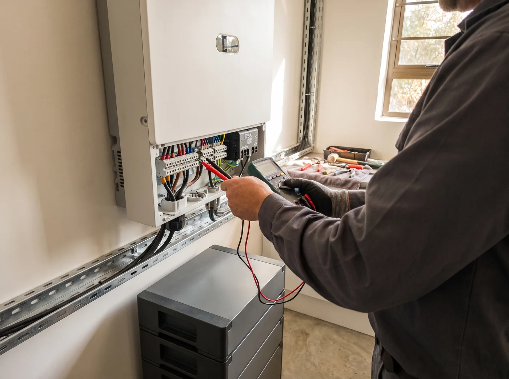

Отопление
Настенный газовый котёл берёт 110–160 Вт — около 3 кВт·ч в сутки. Аккумулятор держит его сутками.
Резервное питание и солнечные станции для дома Солнечные станции для частного дома Комплекты резервного питания · под ключ
Аккумулятор, инвертор и солнечные панели — одна система, которая сама подхватит дом, когда пропадёт сеть. Котёл греет, насос качает воду, холодильник работает, интернет на связи. Панели заряжают аккумулятор, инвертор управляет всем сам. Дом перестаёт зависеть от капризов сети, а с весны до осени живёт в основном на своей энергии. Инверторы, аккумуляторы LiFePO4 и панели — готовые комплекты от квартиры до полностью автономного дома. Расчёт под ваши приборы, оборудование со склада, монтаж под ключ.
Расчёт сразу на сайте — без телефона и регистрации
Зачем это дому
Без электричества не работает даже газовый котёл: встают циркуляционный насос и автоматика. Система резервного питания возвращает дому самое важное — автоматически и без вашего участия.
Настенный газовый котёл берёт 110–160 Вт — около 3 кВт·ч в сутки. Аккумулятор держит его сутками.
Насос скважины работает 10–25 минут в сутки, но при пуске берёт в 3–7 раз больше. Инвертор подбираем с запасом.
Около 0,9 кВт·ч в сутки — продукты и морозилка не пострадают даже при долгом отключении.
Светодиодное освещение всего дома — обычно меньше 200 Вт.
Роутер, телефоны и ноутбуки: работа и связь без перерыва.
Видеонаблюдение, сигнализация и автоматические ворота остаются в строю.
Компрессор Топаса или Астры (20–65 Вт) не остановится — без запаха и аварий.
Микроволновка и чайник — в разумных пределах, если хватает мощности инвертора.
Подбор за минуту
Отметьте, что должно работать без сети и сколько часов нужно продержаться. Покажем мощность инвертора, ёмкость аккумулятора и подходящий комплект.
Готовые решения
Каждый комплект можно расширить: добавить аккумуляторы или панели позже, без замены уже купленного.
Газовый котёл, насос скважины, холодильник и морозильник, свет, интернет, септик, камеры и ворота, телевизор. Микроволновку, чайник и стиральную машину — по очереди.
Электрокотёл и электрическое отопление, бойлер на полную мощность, электроплиту вместе с духовкой, тёплые полы, сауну, зарядку электромобиля. Скажем об этом честно до покупки.
Цены — ориентир по рынку Москвы на октябрь 2026: нижняя граница — бюджетные бренды, верхняя — Deye и аналоги. Нужен другой состав — соберём индивидуально.
Как это устроено
Переключите режим и посмотрите, откуда дом берёт энергию в каждый момент.
Дом питается от сети как обычно. Инвертор держит аккумулятор заряженным на 100% и следит за напряжением.
Вырабатывают энергию днём. 1 кВт панелей под Москвой даёт в июне около 4,3 кВт·ч в сутки, в декабре — около 0,6. С марта по сентябрь главный источник — солнце, зимой — аккумулятор.
Мозг системы. Распределяет энергию между сетью, солнцем, аккумулятором и домом и за доли секунды переходит на аккумулятор при отключении. Умеет подключать генератор.
Хранит энергию. Литий-железо-фосфат устойчивее к перегреву, чем литиевые батареи в гаджетах, и выдерживает тысячи циклов. Ёмкость наращивается модулями.
Честное сравнение
Генератор хорош как запасной вариант на долгие отключения. Но жить с ним каждый день неудобно. Сравните сами.
Лучшее решение для частых и долгих отключений — аккумулятор + солнце, а генератор — подстраховка. Гибридный инвертор работает со всеми тремя источниками.
Почему сейчас
Декабрь 2010, ледяной дождь: в Подмосковье без света остались, по разным данным, от 88 до 400 тысяч человек, часть сёл — до 6 суток. Май 2025, снег на листве: без света больше 525 посёлков и СНТ, одна деревня — пять дней.
Источники: РИА, Lenta, РГДля обычного частного дома правила допускают перерыв до 24 часов подряд и до 72 часов в год. А после крупной аварии СНТ и дальние посёлки подключают последними.
Источник: постановление Правительства № 861, п. 31(6)Когда спрос вспыхивает, первыми пустеют склады: после зимнего шторма 2021 года в Техасе домашние генераторы ждали около 28 недель. Купить спокойно можно только до всплеска.
Источник: Generac, отчёт инвесторам 29.04.2021Подключение к щитку и котлу занимает один день. Удобнее сделать это до морозов: электрик спокойно всё проверит, а аккумулятор встанет в тёплое помещение.
Как мы работаем
Позвоните, напишите в WhatsApp или Telegram — или оставьте заявку на сайте.
Спросим, что должно работать и сколько часов. Посчитаем мощность и ёмкость, предложим 2–3 варианта под бюджет. Можно удалённо — по фото щитка и котла.
Оборудование в наличии — без ожидания поставки. Доставим или соберёте сами.
Электрик подключит систему к щитку и котлу, настроит инвертор и при вас проверит переключение.
Гарантия, консультации и расширение системы, когда понадобится больше энергии.

Почему нам можно доверять
Прежде чем продавать, основатель поставил такую систему в собственный дом и проверил её в деле.
Не продаём лишнего: если хватит аккумулятора без панелей — так и скажем.
Держим запас инверторов, аккумуляторов и панелей, чтобы не ждать поставки.
Гарантия производителя на оборудование и наша — на монтаж и настройку.
Вопросы и ответы
Не нашли ответ — спросите в мессенджере, ответим за несколько минут.
Задать вопросЗависит от ёмкости и того, что включено. Котёл, насос, холодильник, свет и интернет в среднем берут 0,2–0,3 кВт, ещё 40–80 Вт тратит сам инвертор — об этом часто забывают. Поэтому аккумулятора на 10 кВт·ч хватает примерно на 23–35 часов. Чайник, плита и обогреватели сокращают время. Калькулятор выше считает это для вашего набора приборов.
Да. В квартире обычно ставят инвертор с аккумулятором без панелей: система заряжается от сети и сама подхватывает холодильник, свет, роутер и технику при отключении. Подключаем к отдельным розеткам или к линии в щитке. Самый простой вариант — портативная станция на 1–3 кВт·ч: она включается в розетку и не требует монтажа.
Немного. 1 кВт панелей под Москвой даёт в декабре в среднем около 0,6 кВт·ч в сутки, в пасмурный день — вдвое меньше, а под снегом почти ничего. В июне — около 4,3, за год — около 970 кВт·ч. Поэтому зимой главную работу делает аккумулятор, а с марта по сентябрь дом может жить в основном на солнце.
Для автономной системы, которая не отдаёт энергию в сеть, ничего оформлять не нужно — важен грамотный монтаж по правилам электробезопасности. Продавать излишки солнечной энергии в сеть частному дому тоже можно: поможем оформить подключение.
Мы ставим аккумуляторы на основе LiFePO4 со встроенной системой защиты: они устойчивы к перегреву и не боятся глубоких разрядов. Монтаж — с автоматами, защитой и правильным сечением кабеля, в сухом помещении.
Да. Часто начинают с инвертора и одного аккумулятора, а позже добавляют модули и панели. Мы сразу подбираем инвертор с запасом, чтобы расширение не требовало замены.
Большинство отключений короче суток — их закрывает аккумулятор. На многодневные зимние аварии честный ответ — генератор с автозапуском, подключённый к инвертору: он заряжает аккумулятор 2–3 часа в сутки, а дом всё время питается без перебоев. Так генератор не молотит всю ночь вхолостую и тратит в разы меньше бензина.
Нужна сухая стена 1–1,5 м² в котельной, кладовой или техпомещении. Важно: помещение должно быть тёплым — на морозе аккумуляторы LiFePO4 не заряжаются, поэтому в неотапливаемый гараж или на улицу зимой их ставить нельзя.
Если у вас уже бывают отключения — лучше не ждать. Сезон аварий — зима, а монтаж удобнее сделать до морозов. И на всех рынках, где отключения учащались, оборудование при всплеске спроса дорожало и пропадало из наличия.
Аккумуляторы LiFePO4 рассчитаны на тысячи циклов заряда — это 10 лет и больше. Солнечные панели служат 25 лет и дольше, инверторы — 10–15 лет.
Бесплатный расчёт
Расскажите, что должно работать без сети. Перезвоним, уточним детали и пришлём 2–3 варианта с ценами.
Или пришлите в мессенджер три фото — щиток, котёл и место под оборудование. Подберём систему удалённо, без выезда.